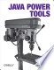

UMLGraph allows the declarative specification and drawing of UML class and sequence diagrams. The current features are part of an ongoing effort aiming to provide support for all types UML diagrams. An IEEE Software article titled On the declarative specification of models explains the rationale behind this approach. The tehnology behind UMLGraph was used to draw many of the diagrams appearing in the award-winning books Code Quality: The Open Source Perspective (Addison Wesley, 2006) and Code Reading: The Open Source Perspective (Addison Wesley, 2003). In addition, the UMLGraphDoc doclet included in this distribution automatically adds UML diagrams to javadoc documentation.
Many programs build on UMLGraph; follow this link for more details.
 Martin Fowler, the author of
UML Distilled, writes:
Martin Fowler, the author of
UML Distilled, writes:
I thought I'd send you a note saying how much I enjoyed discovering UML Graph. I've long fancied a text based way of describing UML diagrams, but never felt sufficiently time-rich to develop anything.
 UMLGraph is also described in O'Reilly's Java Power Tools book.
class Person {
String Name;
}
class Employee extends Person {}
class Client extends Person {}
|

|
# Define the objects object(O,"o:Toolkit"); placeholder_object(P); step(); # Activation and messages active(O); message(O,O,"callbackLoop()"); create_message(O,P,"p:Peer"); message(O,P,"handleExpose()"); active(P); return_message(P,O,""); inactive(P); destroy_message(O,P); inactive(O); # Complete the lifeline of O step(); complete(O); |

|